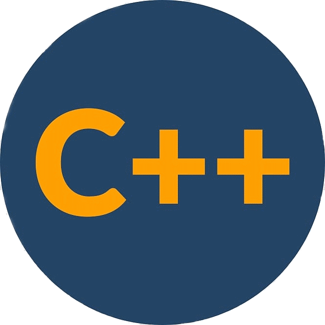
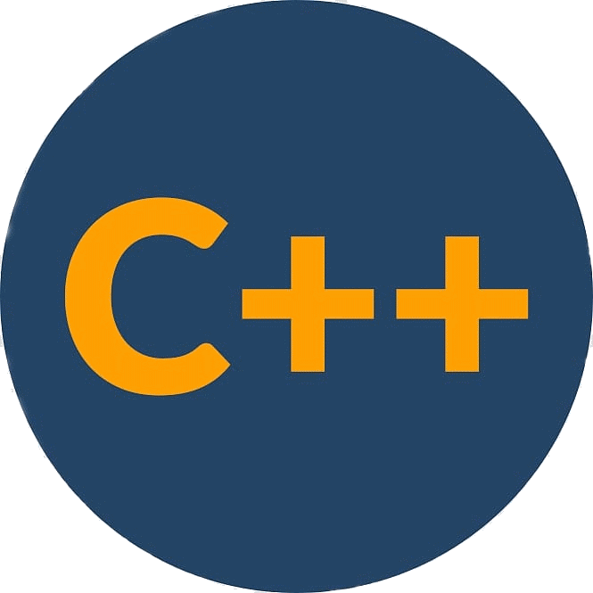

Ricardo A. S. Sena
Graduando em ciência da Computação e Tecnico em informática, entusiasta em ciência de dados e atualmente estudando Python.
Projetos & Repositorios Linguagens & Tecnologias PublicaçõesProjetos & Repositorios
-

Inclusão digital de crianças e adolescentes por meio da robótica educacional
Projeto de Pesquisa e Extensão aplicado no IFRN - Campus Parelhas no ano de 2018.
-

Tripulantes da Aventura Hiperespacial
Aplicativo, desenvolvido durante a 9 edição do Campus Mobile, para auxiliar na rotina de crianças com TDAH.
-

Roteiros LEDA
Repositorio contendo os roteiros desenvolvidos durante a disciplina Laboratorio de Esturura de Dados do Curso de Ciência da Computação na UFCG


 
